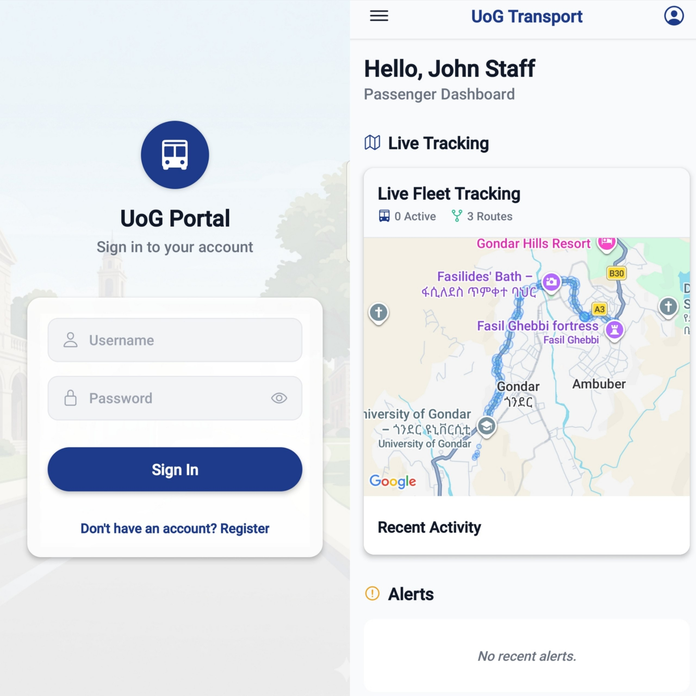
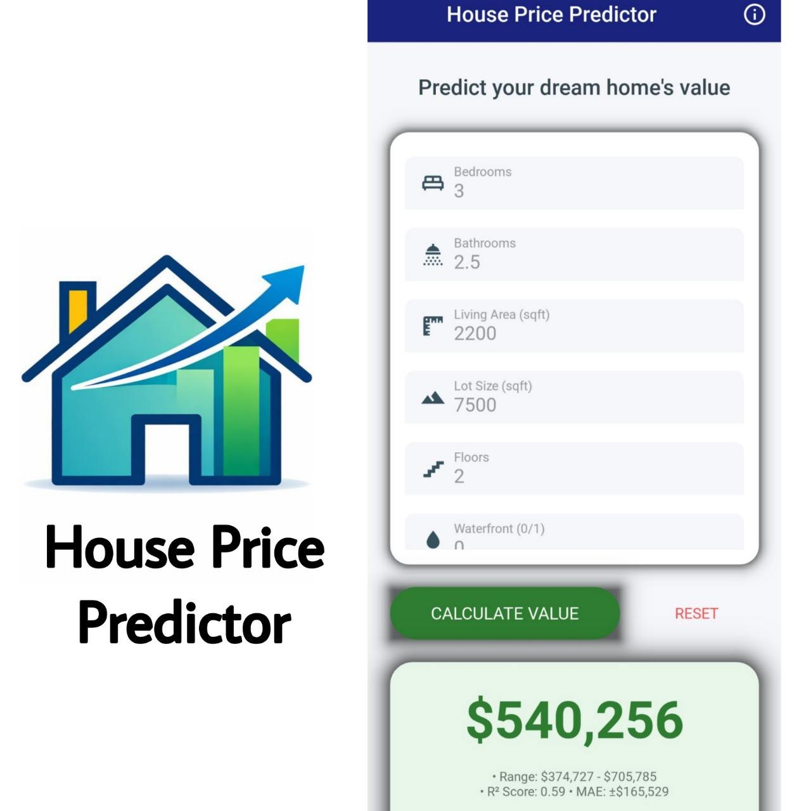
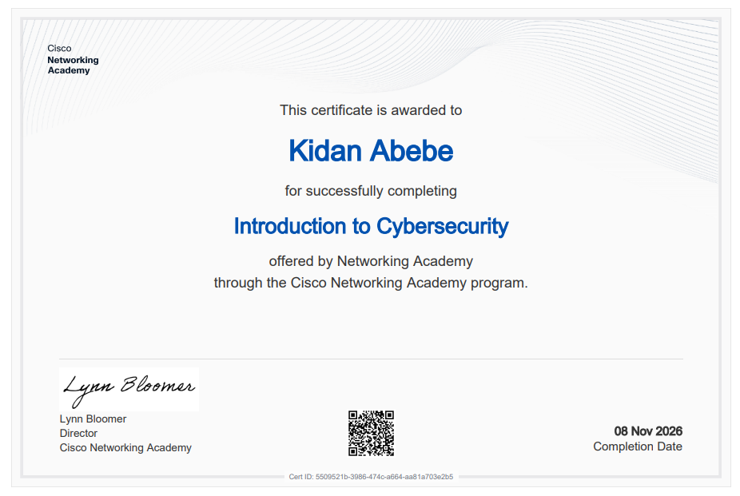
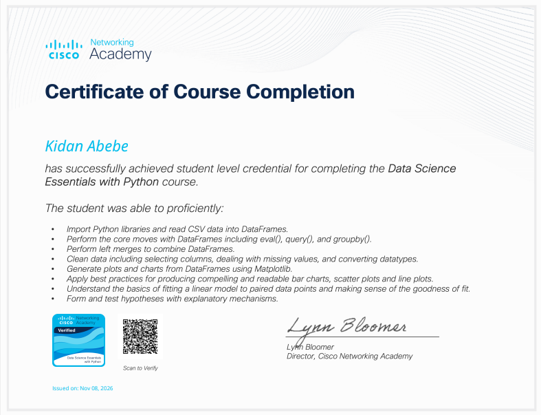

How I work
I learn by building and solving problems step by step, turning what I study into working, useful solutions.
Available for office-based and remote roles in Ethiopia
Information Systems Graduate | Aspiring Web Developer
I design and build practical web and mobile tools, from a fleet-tracking system to a university chatbot, and I'm looking for an entry-level role where I can keep learning on real systems.

01 / About
I like technology that quietly makes everyday work simpler: records that are easy to find, screens that make sense, tools people keep using.
I learn by building and solving problems step by step, turning what I study into working, useful solutions.
On my projects I've followed an idea from the problem to a finished design: understanding the need, structuring the data and shaping the interface people will use.
To keep growing professionally and contribute to an organization where I can build and support useful technology.
02 / Education
My degree gave me the foundations. Projects and short courses are where I put them to work.
University
The program combined how organizations manage information with hands-on work in databases, web technologies and software development. Most of what I know today comes from the projects I built along the way:
After graduation
Short courses and job simulations in cybersecurity and data science, completed in October and November 2026, to widen my skills beyond the classroom.
03 / Projects
Three projects, each starting from a real problem.

The problem. Institutional transport departments often track vehicles, drivers and maintenance by hand, which makes it hard to see where vehicles are and how they're used.
The approach. A system design that brings fleet records, routes, live location and reporting into one mobile-friendly platform.
Features describe the system design and planned functionality.
Project 02
The problem. Students often struggle to find accurate information about university services, academic procedures, admissions, and other frequently asked questions. Finding answers can require visiting different university offices or searching through multiple information sources.
The approach. A university-focused chatbot designed to provide quick, automated responses to common student inquiries through an accessible conversational interface, making university information easier to find.
Built at the University of Gondar.

Project 03
The problem. Estimating property prices can be challenging because housing values depend on several factors, including location, property size, number of rooms, and other characteristics.
The approach. A machine learning application developed using Python to analyze housing data, identify pricing patterns, and predict estimated house prices based on property characteristics.
Built for the Machine Learning course.
04 / Skills
05 / Certifications

Cybersecurity Open certificateCisco Networking Academy
What the course covered:
Certificate ID5509521b-3986-474c-a664-aa81a703e2b5

Data Science Open certificateCisco Networking Academy
Skills covered:
Forage
Practical activities:
06 / Interests
The kinds of work I'd like to do more of.
Building responsive, usable interfaces and the back ends behind them.
Keeping systems running and helping people get the most from their tools.
Understanding how an organization's data and processes fit together.
Testing software so problems are found before users meet them.
Designing data structures that stay accurate, fast and easy to query.
Turning an everyday frustration into a tool that fixes it.
07 / Contact
Whether it's a role, a small project or a question, I'd be glad to hear from you.
Send an email